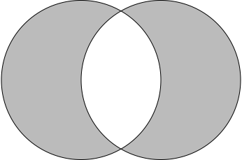
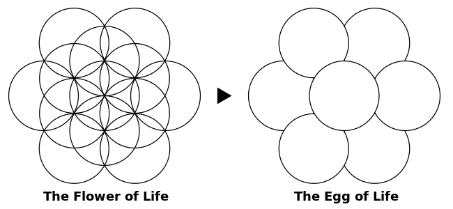
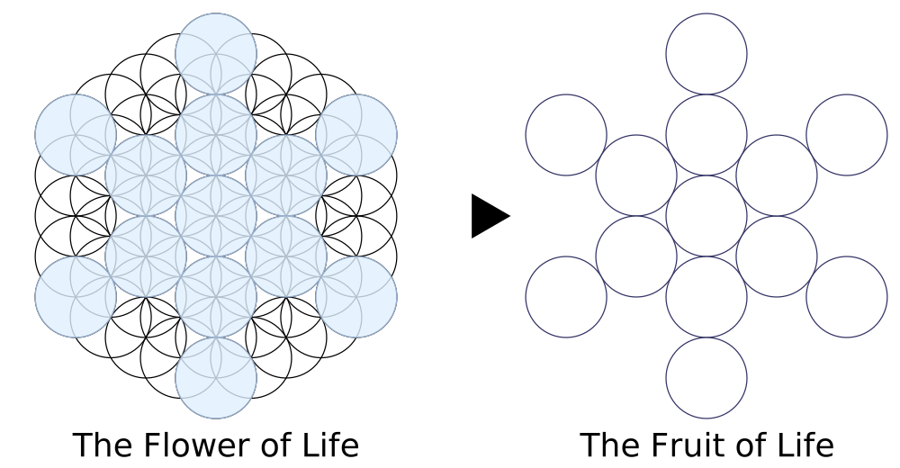
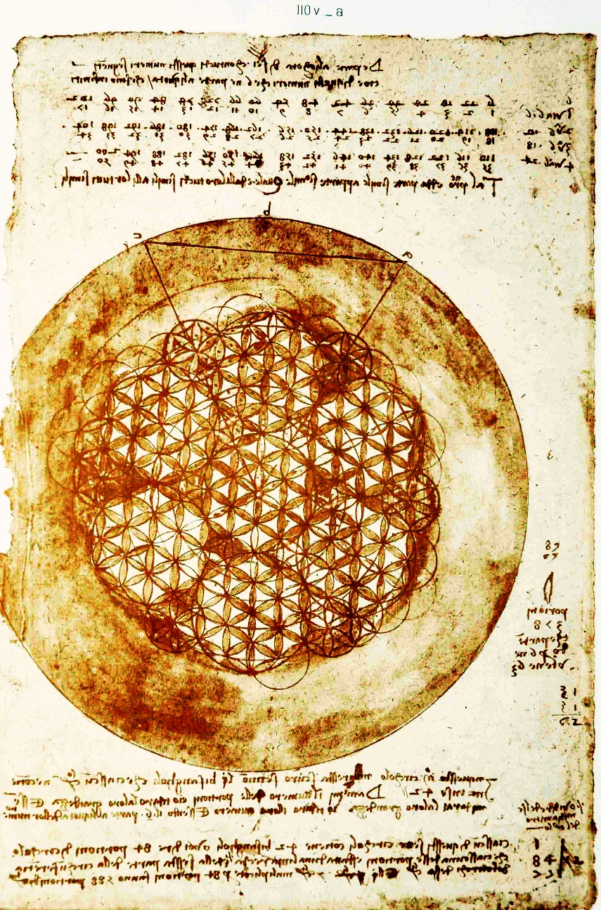
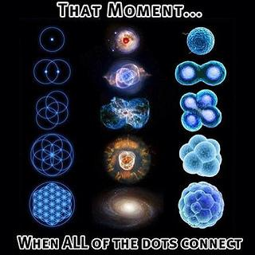

Combining Vesica Piscis

until the egg of life,
ending in the fruit of life which is female round only! apply male by connecting the circle centers with strait lines ending in the
Metatron's Cube! this master pattern contains the platonic solids which encode reality, and few other things!


Leonardo da Vinci take on the flower

In small and big the flower is intimately linked to nature

even our bodys where created on this pattern